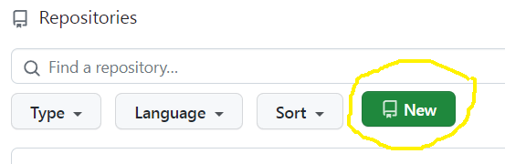

Homework 4
Last updated: Tue, 24 Feb 2026 13:23:25 -0500
Out: Tue Feb 24 2026, 11am EST
Due: Tue Mar 03 2026, 11am EST
Overview
This assignment continues to explore compound data, and also mouse event handling in the "big-bang" library. We also get a preview of lists.
This hw will be graded accordingly:
correctness (Autograded) (10 pts)
design recipe (15 pts)
testing (15 pts)
style (7 pts)
README (1 pt)
Setup
Create a new repository for this assignment by going to the CS450 Spring 2026 GitHub Organization and clicking "New".

Note: The CS450 Spring 2026 GitHub Organization must be the owner of the repository. Please do not create the repository in your own account.
On the "Create a new repository" screen:
Name the repository hw<X>-<LASTNAME>-<FIRSTNAME> where <X> is the current homework number.
For example, I would name my hw4 repository hw4-Chang-Stephen.
Mark the repository as Private.
Check "Add a README file".
Select the Racket template for the .gitignore.
Choose whatever you wish for the license.
When done click "Create repository".
Updating Racket450
Make sure you have the latest version of racket450.
To do this from DrRacket, go to File -> Package Manager -> Currently Installed, search for "racket450", and then click "Update".
Alternatively, if you prefer the command line, run:
raco pkg update racket450
Reading
Read any relevant sections of the The Design Recipe section of the course website, e.g., compound data (topics that will be covered in future lectures are marked as such).
Tasks
The main code should go in a file named hw4.rkt that uses #lang racket450, as described previously.
In this assignment we’ll continue to work on a big-bang interactive program that could maybe eventually resemble a board game.
NOTE: All assignments are designed so that it is quicker to complete them if you start from scratch and follow the Design recipe. No previous code or "solutions" to previous assignments are needed to complete any assignment. Do not attempt to complete this assignment by starting with some pile of code (from of a previous assignment or anywhere else) and trying to "make it work". Doing this demonstrates poor understanding of course concepts—
which focuses on the high-level programming process and not the final code— and thus will receive a low grade. (It also usually leads to tedious bugs that are hard to find and impossible to give help to.)
Here is a (MAYBE COMMING SOON) online demo that approximates the behavior of the program (Note: The course staff has no obligation to show any demo, because there won’t be any such luxury in real-world programming. Thus, any demo is presented as-is and no questions will be answered. Do note that any JS demo may not be exactly the same as a Racket implementation).
NOTE: The submitted program must be only a series of defines (both constants and function definitions are allowed). It should not run any code (e.g., it should not start the big-bang loop automatically!). Not following this will result in GradeScope errors and/or timeouts.
As usual, all code you write must now follow the The Design Recipe. This means that languages features may only be used in the correct scenarios, as called for by The Design Recipe.
For example, set! and other "imperative" features are not allowed ever.
Conditionals such as if and cond are only to be used with the appropriate Data Definitions or in other appropriate scenarios described in class.
Signatures should use define/contract and the predicates defined in the Data Design Recipe step.
For Examples and Tests, do not use check-expect from the Beginning Student Language (even though the textbook says to). Instead, use check-equal? or other testing forms from rackunit (which are built into racket450).
Examples for a function definition should be put before the define in hw4.rkt.
Tests should be put into hw4-tests.rkt that uses #lang racket450/testing. Try to think about corner cases and code coverage.
(NEW) NOTE: One-line helper functions—
if the name and description clearly describe what it does, and it clearly follows some Data Definition and all other Design Recipe steps (the course staff is the final arbiter of this)— do not need to be submitted with Examples and Tests, if they are covered by other tests. ("Helper" functions are defined as functions not described in the homework assignment description.) NOTE: This does not change the Design Recipe. It is only changing submission requirements. As usual, however, we will not be able to debug code that does not follow the design recipe, so omit these steps at your own risk. All other functions should have at minimum one Example and "sufficient" Tests.
High-Level "Game" Specifications
This assignment will only involve a "Game Board" that contains "Cards".
The "Game Board" is a square that is a 3 x 3 grid of "Cards".
Each "Card" will be a square with side CARD-SIZE = 150 pixels such that exactly nine (3 x 3) fit onto a board
The "Board" will start with nine randomly generated "Cards"
When a user clicks on a "Card" it should go away and a new randomly generated Card should appear in its place
Data Definitions
The first step of any programming task is Data Design, i.e., defining the data types that the code will operate on.
Do not start writing any code until you have done this Data Design step.
a Data Definition named Card that represents a "Card" in the game.
You will need to decide the details of this data definition, e.g., the interpretation, etc, and there may be more than one choice.
But the data definition should at least have the following information:the Card’s point value which is an integer that can be zero, but should not exceed MAX-POINTS = 5.
the Card’s color. The valid colors are "red", "green", and "blue"
the "Cost" to acquire the card (see below)
a Data Definition named Cost that represents the "Cost" to acquire a "Card" in a game.
You will need to decide the details of this data definition, e.g., the interpretation, etc, and there may be more than one choice.
But the data definition should at least have the following information:the number of "red Tokens" needed to acquire the card.
the number of "green Tokens" needed to acquire the card.
the number of "blue Tokens" needed to acquire the card.
The minimum token cost for any color is 0 but it should not cost more than MAX-COST = 4 tokens of any one color to acquire any card.
a Data Definition named GameState that represents the current "Board", i.e., the nine currently available "Cards" in the "game".
For this assignment, GameState is required to use a nine-element list to contain the nine cards on the board. In addition,the program must use the list constructor function with nine arguments, or build-list to construct the list
the program must use list-ref to access one element of a list (match-define, with the list pattern, is also allowed if all list elements are to be exacted at once)
the program must use list-set to replace an element of a list
the program can use the list? predicate to identify a list in contracts
no other list functions are allowed
Note that GameState is still considered compound data so make sure to define all the other necessary components of a compound data definition for GameState, e.g., predicate, checked-constructor, etc.You are allowed to define any other Data Defintions as you see fit
big-bang Functions
a function draw-gamestate, with Signature represented by contract (-> GameState? image?) that is given to big-bang’s to-draw clause (See below).
The GameState Image should draw the "Board" which is a 3 x 3 grid containing the currently available "Cards" and nothing else.
- A Card image itself can also be described with a 3 x 3 grid:
the top-third is a "solid" rectangle of the Card’s color. The left-third of this top rectangle should have on top a "point value" image that is a square with the point value overlayed on top (similar to Homework 1)
the middle-third has nothing
the bottom-third has a rendering of the Cost, which is three "Token" renderings of the appropriate color. The "Token" images should exactly fill the bottom-third, meaning that the sides either touch the side of the Card or each other.
NOTE: A Card image might be similar to goal-img from Homework 1 but not the same. So review it if you wish, but it will be easier to start from scratch instead of copying code. a mouse handler function called handle-mouse with Signature represented with contract (-> GameState? integer? integer? mouse-event? GameState?) where (mouse-event? k) evaluates to true if k is a valid MouseEvent from 2htdp/universe. The function should be given to big-bang’s on-mouse clause (See below).
The function it should only respond to a "button-down" mouse event. Everything else should be ignored, i.e., should not change the GameState. (You can assume that a "button-down" event can only occur if the mouse cursor is within the big-bang window.)
As previously mentioned, when a click occurs, the big-bang program should replace the clicked card with a random new one.
As usual, to start the "game", define a function run that takes no arguments and starts the big-bang interactive loop
The big-bang expression should:
Functions with randomness
a function random-gamestate with Signature represented by contract (-> GameState?) that contains nine random cards
a function random-card with Signature represented by contract (-> Card?) that returns a random Card. You will need to figure out how to generate random components of the Card, e.g., random color, point value, and Cost
API for Grading
Finally, define the following accessor functions so your submission may be properly tested and graded for correctness. These functions do not need to follow the Design Recipe, e.g., you may combine several templates if needed.
GameState-card, with Signature represented by contract (-> GameState? CardSlot? Card?) where CardSlot is an integer in the range [1,9] representing a card position in the 3 x 3 grid of cards. The cards are numbered left-to-right, top-to-bottom, with 1 on the top left and 9 on the bottom right
Card-color, with contract (-> Card? image-color?), where the returned color should only be "red", "green", or "blue".
Card-point-value with contract (-> Card? integer?), returns an integer between 0 and MAX-POINTS = 5
Card-red-cost with contract (-> Card? integer?), returns an integer between 0 and MAX-COST = 5
Card-green-cost with contract (-> Card? integer?), returns an integer between 0 and MAX-COST = 5
Card-blue-cost with contract (-> Card? integer?), returns an integer between 0 and MAX-COST = 5
Before Submitting
Testing (and Autograders)
Before submitting, note:
Each programmer is solely responsible for testing their program to make sure it’s correct. Do not submit until all code has been has a "sufficient" number of Test cases that verify its correctness.
Note that there is no GradeScope "Autograder" available for students to use (an Autograder is not a software development/testing tool anyways, so it should not be used as one).
Thus, no questions mentioning an Autograder will be answered, e.g., posts asking "why is the Autograder giving an error?" are not allowed.
If you happen to find an Autograder and decide to look at its output despite this warning, please understand that it may be incorrect or incomplete, change at any time, or have random behavior, and that it in no way indicates the grade of the submitted hw.
Anyone that does get useful information from an Autograder, e.g., a failing test case or crashing code report, should treat it as bonus information (that you otherwise would not have had) that you and you alone must determine what to do with.
Regardless of what any Autograder might say, all code must still be independently tested to be correct before it is submitted.
The proper way to ask questions is with small code examples. This means that each question must include a small example code snippet along with what the "expected" result should be!
Further, any posted examples should contain the minimal amount of code needed to explain the question. Full file dumps or anything more than a few lines will not be accepted. More is not better. In fact it’s worse because it takes longer to read and is less likely to get a good answer.
Style
All code should follow proper Racket Style.
Also, the repository itself must follow proper style. Specifically, it must have appropriate commit messages. See How to Write a Git Commit Message if you are unsure how to write a commit message.
Note: Do not use the "file upload" feature on Github. The course staff may not accept hw uploaded in this way.
Files
A submission must have the following files in the repository root:
hw4.rkt: Contains the hw solution code.
The first line should be #lang racket450.
All defines should use the name specified in the exercise (ask if you are unsure).
hw4-tests.rkt: This file should use the #lang racket450/testing language.
It should also require hw4.rkt and define tests for it.
Specifically, it should contain "sufficient" Test cases (e.g., check-equal?, etc.) for each defined function.
README.md: Contains the required README information, including the GitHub repo url.
Submitting
When you are done, submit your work to Gradescope hw4. You must use the "GitHub" Submission Method and select your hw<X>-<LASTNAME>-<FIRSTNAME> repository.
Note that this is the only acceptable way to submit homework in this course. (Do not manually upload files and do not email files to the course staff. Homework submitted via any unapproved methods will not be graded.)